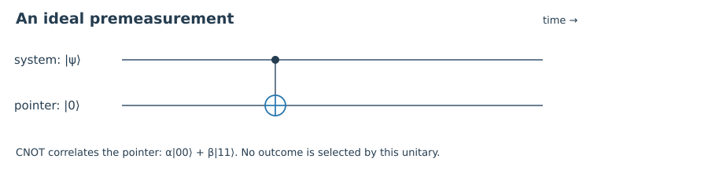

1. Quick check §
Compute the pointer probabilities for α=√3/2 and β=i/2.
Hint 1
Take squared magnitudes.
Worked solution
They are 3/4 and 1/4; the relative phase does not change these Z statistics.
Chapter 01 · Draft lesson
If the equations predict the detector statistics, what is left for an interpretation to explain?
Starting point: Quantum Foundations: states, tensor products, projective measurement, and probability.
Anchor example: A qubit and a two-state pointer coupled by a controlled NOT.
Method: Calculate a concrete experiment, identify the assumptions, then compare what different accounts explain.
Watch for: A reduced density matrix that predicts outcomes does not, by itself, specify what physically occurs in one run.
This lesson includes explanations, worked examples, and problems with solutions. Advanced results whose proofs are outside the chapter are identified explicitly.
If the equations predict the detector statistics, what is left for an interpretation to explain?
Imagine that you prepare a qubit in \(|+\rangle=(|0\rangle+|1\rangle)/\sqrt2\). You measure Z, write down a result, and repeat. Half the records are approximately zero and half one. Nothing mysterious has happened to the statistics. The difficulty begins when we ask the quantum theory to describe the device making those records.
Represent its ready state by \(|A_r\rangle\), with distinguishable records \(|A_0\rangle,|A_1\rangle\). An ideal interaction satisfies \(U|0,A_r\rangle=|0,A_0\rangle\) and \(U|1,A_r\rangle=|1,A_1\rangle\). The same linear operator must therefore satisfy
\[U(\alpha|0\rangle+\beta|1\rangle)|A_r\rangle=\alpha|0,A_0\rangle+\beta|1,A_1\rangle.\]We have derived a correlation, not a randomly selected term. The detector is perfectly reliable within each component: there is no amplitude for a zero paired with the wrong record. Reliability and uniqueness are different questions. The state has exactly the correlations an experiment needs, while its relation to one observed record still calls for an account.
A pointer qubit initially in |0⟩ makes this concrete: a CNOT produces α|00⟩+β|11⟩. This is an ideal premeasurement. A stable laboratory record additionally involves amplification and interaction with an environment. Neither step should be silently replaced with a collapse postulate.

Worked check 1.1. For α=β=1/√2, is the output a product?
No. Its reduced qubit state is I/2, which has purity 1/2. A bipartite pure product would have a pure reduced state. The output is entangled.
Let us make the tension precise rather than calling everything “weird.” Consider three commitments: the wavefunction is a complete physical description; every isolated system, including an apparatus, evolves linearly and unitarily; and a completed measurement has one definite outcome in the ordinary sense of a unique macroscopic record. With the additional usual link between a definite pointer value and the corresponding pointer subspace, the state above does not satisfy all three commitments at once for nonzero α and β.
This is a formulation of the measurement problem, not a theorem declaring quantum mechanics contradictory. One can change the account of completeness, the dynamics, the account of outcomes, or the role assigned to the quantum state. Interpretations differ partly because they reject different parts of this package.
\[\rho_A=\operatorname{Tr}_S|\Psi\rangle\langle\Psi|=|\alpha|^2|A_0\rangle\langle A_0|+|\beta|^2|A_1\rangle\langle A_1|.\]The pointer's density operator gives the correct local frequencies. It does not license the further inference that the joint state has secretly become one product state or the other. A partial trace is an operation on a description of a subsystem. It is not a new dynamical law acting on a single experimental run. This distinction will do much of the work in the next chapter.
Worked check 1.2. Does a diagonal pointer state identify the result in an individual run?
It supplies probabilities for pointer measurements. An individual outcome requires whatever event, conditioning, configuration, or branch account the chosen interpretation provides.
There are several questions hiding inside “What does the wavefunction mean?” Is it a physical field, part of a law, a summary of information, or an agent's probability assignment? Which quantities are definite? What makes a record stable? Why should squared amplitudes govern expectations? Asking these separately makes disagreements easier to locate.
Our common operational language uses a preparation ρ, a measurement with positive effects \(E_k\) summing to I, and \(p(k)=\operatorname{Tr}(\rho E_k)\). To predict later experiments we also need an instrument: completely positive maps \(\mathcal I_k\), with \(\sum_k\mathcal I_k\) trace preserving. The conditional state is \(\mathcal I_k(\rho)/p(k)\) when the outcome has nonzero probability. Effects alone do not specify disturbance.
An interpretation must connect these calculations to a clear account of experiments. A modified theory can also change the predictions; objective-collapse models are a central example. We will not rank approaches by how strange their names sound. We will ask what each posits, what equations it uses, which probabilities it reproduces, and which explanatory task remains open.
Keep an assumption ledger as you read. Write “calculation,” “postulate,” “theorem under assumptions,” or “interpretive proposal” next to each important step. This habit is more valuable than memorizing slogans about observers.
Worked check 1.3. Can two instruments share the same effects?
Yes. Measuring Z and retaining |k⟩, or measuring Z and then preparing |+⟩, both have effects |k⟩⟨k|. Their later X statistics differ: the first gives equal outcomes, the second gives + with certainty.
These exercises draw on the whole chapter. Attempt each question before opening a hint, explain your reasoning, then compare it with the worked solution.
Compute the pointer probabilities for α=√3/2 and β=i/2.
Take squared magnitudes.
They are 3/4 and 1/4; the relative phase does not change these Z statistics.
Find the reduced system purity for general normalized α,β.
The eigenvalues are |α|² and |β|².
The purity is |α|⁴+|β|⁴. It is one only when one amplitude vanishes.
Why does the measurement interaction not clone an arbitrary qubit?
Compare α|00⟩+β|11⟩ with a tensor square.
The tensor square has cross terms αβ|01⟩ and αβ|10⟩ and squared amplitudes. The correlated output copies basis labels, not arbitrary states.
List one commitment that a collapse model changes.
Look at the dynamical claim.
Universal unitary evolution is modified by stochastic localization; single outcomes are then associated with an additional physical process.
Explain why tracing out a system is not a physical collapse.
Compare the global state before and after the calculation.
The partial trace changes which observables we describe, leaving the global state untouched. Collapse would change the state or its physical interpretation.
What additional value rule is used in the three-claim tension?
Which states count as definite pointer values?
A definite record is represented by a state in its corresponding pointer subspace. Changing the relation between state and definite properties changes the argument.
For E±=(I±ηZ)/2, determine allowed real η.
Require both eigenvalues of each effect to be nonnegative.
The eigenvalues are (1+η)/2 and (1−η)/2, so −1≤η≤1; their sum gives I.
Calculate p(+) for ρ=(I+rZ)/2 and E+ above.
Use Tr Z=0 and Tr I=2.
The probability is (1+ηr)/2. It depends on both the state and the measurement sharpness.
Why are effects insufficient for predicting a second measurement?
Compare the two instruments in the worked check.
The effects fix outcome probabilities but not conditional output states. The disturbance map is needed for subsequent statistics.
Design a comparison rubric for two interpretations.
Use the assumption ledger.
Specify the state meaning, ontology, dynamics, outcome account, probability rule, and empirical domain for each. Compare the same apparatus model before discussing explanatory preferences.